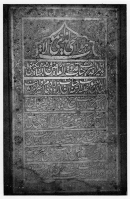

Şebüsterî’nin şeyhinin mezar taşındaki kitâbenin Türkçesi

O’dur ölmez diri
Burası, ariflerin uydukları, saliklerin özü, özeti olan efendimiz Bahaeddin Yakub’un yattığı yüce yerdir; rahmet olsun ona. O yüce zat, vilayet ormanının arslanının (Hz. Ali’nin) hizmetçisi Mâlik-i Eşter’in evladındandır ve Şeyh Mahmud, o mertebesi yüce, büyük kişinin yetiştirdiklerindendir. Şeyh Mahmud gibi birisi, onun terbiye eteğinden kalkmış yücelmiştir.
Güneşe delil gene güneştir.[2]
Bu iki yüce taş levha, bin iki yüz altmış yedi yılında bu yüce makama konmuştur.